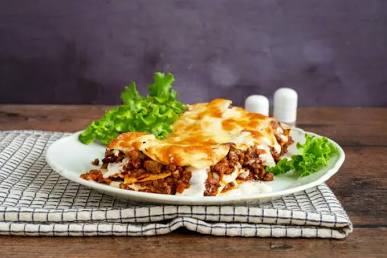

Brown the ground beef with the onion and garlic over medium heat. Drain excess fat. Stir in crushed tomatoes, tomato paste, oregano, and basil. Simmer for 15 minutes.
In a separate bowl, mix the ricotta cheese, egg, and half of the parmesan until well combined.
In a 9x13 baking dish, spread a thin layer of sauce. Layer noodles, cheese mixture, mozzarella, and meat sauce. Repeat until all ingredients are used, ending with a heavy layer of mozzarella on top.
Cover with foil and bake at 375°F (190°C) for 25 minutes. Remove foil and bake another 25 minutes until golden and bubbly. Let it rest for 15 minutes before slicing so the layers set.